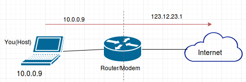
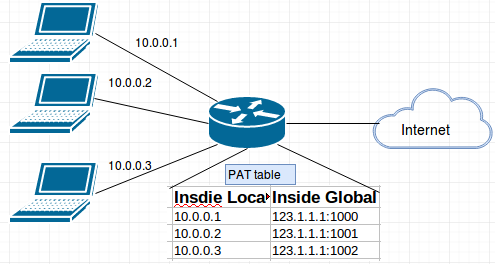
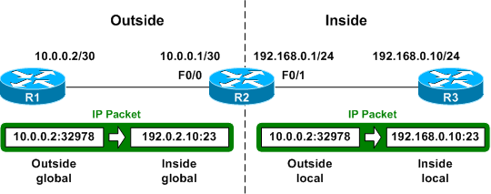

Network Address Translation (NAT)¶
អ្នកអាចចូលទៅកាន់អុីនធឺណេតបាន នៅពេលដែលអ្នកមាន public IP address ហើយវាគឺមានតែមួយគត់។ ប្រសិនបើhostនិមួយៗនៅលើពិភពលោកនេះត្រូវការ public IP address មួយ នោះយើងគួតែមិនមានសល់IP address តាំងពីប៉ុន្មានឆ្នាំមុនមកម្លេះ។ ប៉ុន្តែដោយការប្រើ Network Address Translation (NAT) យើងអាចសន្សំសន្ចៃរាប់លានIP addresses សំរាប់ការប្រើប្រាស់ដល់បច្ចុប្បន្ន។
“NAT អាចអោយhost ដែលមិនបានចុះបញ្ជីIP addressមួយដោយមានសុពលភាពត្រឹមត្រូវ អាចទំនាក់ទំនងជាមួយhostsផ្សេងៗទៀតនៅលើ Internet។”
ឧទាហរណ៍៖ កុំព្យូទ័ររបស់អ្នក អ្នកបានផ្ដល់(assigned) private IP address: 10.0.0.9។ តាមពិតទៅaddress នេះមិនអាចដឹកនាំ(routed)ទៅកាន់អុីនធឺណេតបានទេ ប៉ុន្តែអ្នកនៅតែអាចដំណើរការនៅលើអុីធឺណេតបាន (ហេតុអ្វី?)។ នេះគឺដោយសារតែ modem (ឫrouter) របស់អ្នកបានបកប្រែ addressខាងលើនេះ (10.0.0.9) ទៅជាpublic IP address: 123.12.23.1 ជាដើម មុននឹងដឹកនាំទិន្ន័យរបស់អ្នកទៅកាន់ អុីនធឺណេត។
ពិតមែនហើយនៅពេលដែលrouterរបស់អ្នកទទួលបានការឆ្លើយតប(packet reply)ពីdestinedសំរាប់ 123.12.23.1 វានឹងបកប្រែត្រឡប់ទៅ private IP ដើមវិញមុននឹងបញ្ជូនpacketទៅកាន់អ្នក។
មកដល់ត្រឹមនេះអ្នកអាចនឹងសួរថា៖ អ្នកមិនបានឃើញភាពខុសគ្នានៃការប្រើប្រាស់NAT ដើម្បីសន្សំសន្ចៃរាប់លានIP addressផង ពីព្រោះអ្នកនៅតែ ត្រូវការpublic IP addressមួយសំរាប់hostនិមួយៗរបស់អ្នក។ ដូច្នេះហេតុអីចាំបាច់ប្រើNAT?
ដើម្បីស្រាយចំងល់នេះ ឧបមាថាក្រុមហ៊ុនរបស់អ្នកមានបុគ្គលិក**៥០០នាក់** ប៉ុន្តែISP (Internet Service Provider)របស់អ្នកផ្ដល់អោយ អ្នកតែ**៥០ IP addresses**។ នេះមានន័យថាអ្នកអាចអោយតែ៥០ hostsតែប៉ុណ្ណោះ ដែលអាចដំណើរការចូលទៅកាន់Internetនៅពេលតែ មួយ។ នៅទីនេះNATអាចជួយបាន!
អ្នកអាចកំចំណាំបានដែរថា នៅភាពជាក់ស្ដែង មិនមែនរាល់បុគ្គលិករបស់អ្នកសុទ្ធតែប្រើប្រាស់អុីធឺណែតនៅពេលតែមួយនោះទេ។ អាចនិយាយបានថា មានតែ៥០នាក់ប្រើប្រាស់អុីនធឺណេតដើម្បីអានកាសែតនៅពេលព្រឹក ៥០នាក់ផ្សេងទៀតប្រើអុីនធឺណែតនៅថ្ងៃត្រង់ដើម្បីឆែក អុីមែល...។ ដោយការប្រើប្រាស់NAT អ្នកអាចផ្ដល់៥០ public IP addresses ដោយdynamically ទៅអោយអ្នកត្រូវការអ្នកដែលពិតជាត្រូវការវា នៅពេលនោះ។ នេះគេហៅថា dynamic NAT។
ក៏ប៉ុន្តែដំណោះស្រាយ NAT ខាងលើមិនទាន់អាចដោះស្រាយបញ្ហាខាងលើបានទាំងស្រុងនៅឡើយទេ។ ព្រោះនៅថ្ងៃណាមួយនឹងមានច្រើនជាង ៥០នាក់ដែលចូលទៅកាន់វេបសាយនៅពេលព្រឹក។ នៅក្នុងករណីនេះ មានតែ៥០នាក់តែប៉ុណ្ណោះដែលអាចប្រើអុីនធឺណែត អ្នកផ្សេងទៀតត្រូវ រងចាំដល់វេន។
បញ្ហាផ្សេងទៀតនោះគឺ ISPរបស់អ្នកអាចផ្ដល់ pulic IP ដល់អ្នកនូវចំនួនតិចជាងនេះ(៥០) ព្រោះpublic IPសព្វថ្ងៃនេះមានចំនួនកំណត់។
ដើម្បីដោះស្រាយបញ្ហាពីរខាងលើ នៅមានលក្ខណៈផ្សេងទៀតអាចប្រើបានគឺ NAT Overload ឫហៅម្យ៉ាងទៀត Port Address Translation (PAT)។
PAT អាចអោយdevicesច្រើននៅក្នុងបណ្ដាញLAN (local area network) អាចផ្គូផ្គង(mapped)ទៅនឹងpublic IP addressតែមួយ នៅលើportផ្សេងៗគ្នា។ ដូច្នេះទើបគេហៅថា port address translation (PAT)។ នៅពេលដែលប្រើPAT routerរក្សាទុកលេខportនៅក្នុង **inside global** IP address ដើម្បីបែងចែកភាពខុសគ្នា(distinguish)រវាងការបកប្រែ(translations)។ នៅក្នុងឧទាហរណ៍ ខាងក្រោម នេះផ្ដល់public IP address 123.1.1.1 ដូចគ្នា ប៉ុន្តែជាមួយនឹងលេខportផ្សេងគ្នា(ពី 1000 - 1002)។
Note
Cisco ប្រើពាក្យ(term)ថា inside local សំរាប់ private IP address និង **inside global**សំរាប់public IP addressesជំនួសដោយrouter។
Outsdie host IP addressអាចត្រូវបានប្ដូរដោយNAT។ Outside global addressដំណាងអោយoutside hostជាមួយនឹងpublic IP addressដែលអាចប្រើសំរាប់ដឹកនាំ(routing)ទៅកាន់អុីធឺណែតpublic។
ពាក្យចុងក្រោយ outside local address គឺជាprivate addressនៃ external devices សំដៅទៅលើdevicesនៅបណ្ដាញlocal network។ អ្នកអាចយល់`outside local` address ដូចទៅនឹង`inside local` address នៃexternal devciceដែលឋិតនៅផ្នែកផ្សេងទៀត អុីនធឺណែត(at the other end of Internet)។
ប្រហែជាអ្នកនឹងសួរថា តើportប៉ុន្មានដែឡយើងត្រូវប្រើសំរាប់IPនីមួយៗ? ដោយសារតែ port number fieldមាន 16-bits, PATអាចគាំទ្រ(support)ប្រហែល 2^16 ports។ ដែលអាចមានចំនួនច្រើនជាង**៦៤ ០០០**ការតភ្ជាប់**public IP address**មួយ។
មកដល់នេះយើងបានស្វែងយល់ជាច្រើនអំពី NAT translation។ ឥឡូវយើសង្ខេបមកវិញ NATមានពីរប្រភេទៈ dynamic & static។
Static NAT¶
បង្កើតឡើងសំរាប់ការផ្គូផ្គង់ ១-១ រវាងlocal & global addresses។ ដែលដំរូវអោយអ្នកមានIPមួយសំរាប់hostនីមួយៗ។
Dynamic NAT¶
បង្កើតឡើងសំរាប់ផ្គូរផ្គងIP address មួយដែលមិនបានចុះបញ្ជីត្រឹមត្រូវ ទៅនឹង IP addressដែលបានចុះបញ្ជី ពីa pool of registered IP address។ អ្នកមិនចាំបាច់configស្តេទិចនោះ(statically)នៅលើrouterរបស់អ្នកនោះទេ ដើម្បីផ្គូផ្គង inside -> outside address ដូចករណី static NAT។ ប៉ុន្តែអ្នកត្រូវតែមានចំនួនIP(real)គ្រប់គ្រាន់ សំរាប់អ្នកដែលមានដំរូវការភ្ជាប់ទៅនឹងអុីធឺណែត។ ជាមួយDynamic NAT អ្នកអាចconfigure the NAT routerជាមួយចំនួនIP addresses នៅក្នុងinside local address listបានច្រើនជាងនៅក្នុង inside global address pool។ នៅពេលកំណត់នៅក្នុង inside global address pool គឺrouterបែងចែកចំនួនpublic IP addresses ពីpoolរហូតដល់ពេលបានបែងចែកទាំងអស់។ ប្រសិនបើpublic IP addresses ត្រូវបានបែងចែករួចរាល់ routerនឹងលុបចោលនូវpacketដែល មានដំរូវការpublic IP address។
PAT (Port Address Translation)¶
PAT ក៏ជាប្រភេទមួយនៃ**Dynamic NAT**ដែរ ដែលផ្គូផ្គងmultiple private IP addresses ទៅ a single public IP address (many-to-one)**ដោយប្រើប្រាស់portsផ្សេងៗគ្នា។ ទាំង**Static NAT & Dynamic NAT តម្រូវ one-to-one mapping ពីinside local ទៅ inside global address។ ដោយប្រើPAT អ្នកអាចមានរាប់ពាន់អ្នកប្រើប្រាស់អាចភ្ជាប់ទៅកាន់អុីនធឺណែត ដោយប្រើpublic IP addressតែមួយ។ PAT គឺជាបច្ចេកទេស ដែលជួយយើងមិនអោយអស់public IP addressនៅលើអុីនធឺណែត។ នេះជាប្រភេទពេញនិយមបំផុតរបស់NAT។
ក្រៅពី NATដែលផ្ដល់ជំរើសសំរាប់អ្នកប្រើa single address សំរាប់បណ្ដាញរបស់អ្នកទាំងមូលទៅកាន់ពិភពលោកទាំងមូល វានៅមានប្រសិទ្ធភាព ល្អក្នុងការលាក់internal networkពីpublic worldយ៉ាងល្អប្រើសើផងដែរ។ គឺវាផ្ដល់នូវសុវត្ថិភាពបន្ថែមសំរាប់បណ្ដាញរបស់អ្នក។
NAT Terms¶
- Inside local address -IP addressផ្ដល់ទៅhostនៅក្នុងinside network។ ជាទូទៅaddressនេះ មិនបានផ្ដល់ដោយ Internet Information Center (InterNIC) ឫservice provider។ Addressនេះជា RFC 1918 private address។
- Inside global address - ជាIP addressសមស្របមួយ ដែលផ្ដល់ដោយInterNIC ឫservice provider ដែលដំណាងអោយមួយ ឫច្រើន inside local IP addresses ទៅកាន់outside world។
- Outside local address - ជាIP addressនៃoutside host ដែលស្គាល់ជាhostsនៅឋិតនៅinside network។
- Outside global address - ជាIP address ផ្ដល់ទៅhost នៅលើoutside network។ ម្ចាស់នៃhost ជាអ្នកផ្ដល់នូវaddressនេះ។
អានថែមៈ http://packetlife.net/blog/2010/jan/7/understanding-nat-address-types/